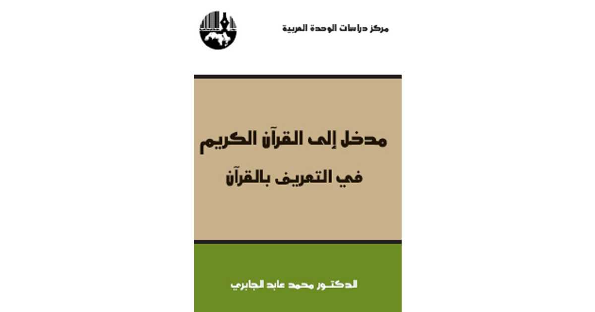
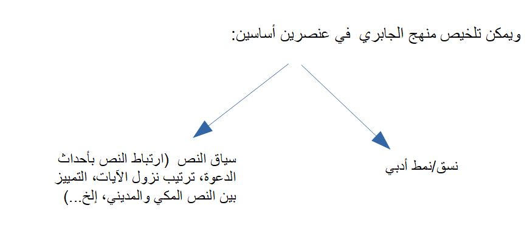

غلاف كتاب "مدخل إلى القرآن الكريم" لمحمد عابد الجابري
كانت منتصف الألفينات هي لحظة محمد عابد الجابري (1935 –2010) بامتياز. أتذكر أن زملاء الدراسة في الكلية كانوا يتبادلون كتبه بفخر وانبهار ويتكلمون أنه كيف أخيرًا نجح أحدهم في تقديم منهج ميشيل فوكو (1926 – 1984) في الحفر والتنقيب المعرفي، ومنهج جاك دريدا (1930-2004) للتفكيك للحقل المعرفي العربي. وأتذكر أني حاولت قراءة «بنية العقل العربي» (1986)، ولكن لم يثر اهتمامي، ولم أشعر بأن ما فعله الجابري كان «فتحًا معرفيًا» كما كان يقول البعض، ولعل ذلك كان بسبب إمكانياتي الفكرية وإطلاعي المحدود، فلم أدرك أهمية ما فعله الجابري كمحاولة لقراءة مغايرة للتراث (بكل محدوديات تلك القراءة والنقد الذي وُجه إليها)، في سياق سياسي-اجتماعي أوسع مازال مشغولًا بجدل الأصالة/المعاصرة أو الدين/العلمانية…إلخ.
ولم أعرف أن الجابري بعد الانتهاء من مشروعه التفكيكي ومحاولته قراءة التراث العربي قد وجه جهده إلى محاولة لتفسير القرآن، أو على الأقل قراءة تراث التفسير، بشكل يتجاوز الجدل الأيدولوجي المستعر حول قدسية النص واستحالة تأويله (انظر قضية نصر حامد أبو زيد). وتحمست لقراءة ذلك الامتداد المنطقي للمشروع المعرفي الذي بدأه الجابري، وهو محاولة قراءة النص المركزي للفكر العربي: القرآن. وفي حوالي 500 صفحة يحاول الجابري رسم خطوط ذلك المشروع، قبل الشروع في تفسير القرآن في ثلاث مجلدات أخريات.
يبقى النص القرآني نصًا مُعجِزًا ومُلغّز للكثيرين، لكاتب هذه السطور كذلك، فلغته البليغة، المكثفة، بها الكثير من الإحالات لمواضع ومواقف مرتبطة ارتباطًا وثيقًا بزمن الدعوة أو حياة النبي ومسارها من مكة إلى المدينة. ومن جهة أخرى يفتح القرآن مساحة هائلة من الاشتباك مع أصحاب الديانات الأخرى، اليهودية والمسيحية بالأساس، ومن ثم تصبح قراءة النص وكأنها حوار متعدد الأطراف، يتضمن النبي المرسل، وقومه من قبائل العرب في الجزيرة العربية في القرن السابع الميلادي، ومجموعات من اليهود المقيمين في الجزيرة آنذاك، مع مجموعات مسيحية عربية وغير عربية، والأقوام والجماعات التاريخية (السابقة على عرب الجزيرة في عهد الدعوة) التي تناولها القرآن، والمسلمين وغير المسلمين الذين يقرأون النص في تلك اللحظة[1].
مسارات زمنية متعددة، وشخوص حوار نعرفها ولا نعرفها، وتراث طويل يتجاوز ألف وخمسمائة عام من محاولات تفسير وفهم النص. معضلة حقيقية لشخص عادي يحاول قراءة النص[2].
هناك مئات التفاسير (باختلاف منهاجها وموضوعاتها) إلا أنه لا يوجد تفسير تم الإجماع عليه كالتفسير الأوحد أو المطلق للنص. ورغم أن غياب ذلك الإجماع كان من شأنه أن يعطي مساحة كبيرة من الابتكار والإبداع والبحث في تاريخ السياسي والجغرافي والاقتصادي، الاجتماعي والثقافي لسياق الوحي، إلا أن تلك الاحتمالات قد أدت إلى النتيجة المعاكسة تمامًا. فقد أدت قدسية ومركزية النص في علاقته بالتبعات السياسية والأخلاقية له، إلى تجميد أي محاولة لتفسيره بشكل «معاصر»[3] وبقى أسير متخصصي علم التفسير وعلوم القرآن (من بلاغة وفقه وحديث،…إلخ) مما اجتمع وتوافق عليه من المذهب السني-الأشعري. أما ما دون ذلك فلا يعول عليه كما يقولون.
ولعل ذلك هو ما دفع الجابري لكتابة «مدخل إلى القرآن» يحاول فيه تحاشي الجدل الفقهي أو الفلسفي للتفسير (إلا بشكل عام حين يقدم رصدًا لمختلف أفكار/مذاهب التفسير[4])، ولا يتكلم فيه عن البلاغة والنحو ولا يحاول أن يخالف الإجماع السني-الأشعري بأي شكل درءًا للفتنة (ولكم في نصر حامد أبو زيد عبرة وعظة). فكتاب الجابري حقًا كتاب سهل وبسيط لا يتكلف فيه ولا يحاول الزج بمصطلحات فقهية أو لغوية تعجز القارىء أو تشعره بصعوبة الإلمام بذلك التراث الطويل المعقد. وهذا بلا شك أمر يحسب له كمساهمة لفتح منهج الفهم إلى ما يمكن أن نسميه أدنى مستويات الاتفاق (الاتفاق حول وحدة النص، ارتباطه بحوادث وأحداث مرتبطة بحياة النبي ومسار الدعوة، أهمية ربط النص القرآني بكتب التوحيد السابقة عليه،…إلخ).
يحاول الجابري التخلص من جدل «زمنية النص» بمعنى أن النص مرتبط بأحداث زمنية معينة تفسره من ناحية ولكن أيضا تحد من معناه من ناحية أخرى في ثنائية (تاريخية/لازمنية) يرفضها معظم التراث السني الأشعري. فيعترف أن للنص إحالات إلى حوادث وأحداث خاصة بالدعوة وما مر على المسلمين من تجارب، ولكن يؤكد على أن تلك الأحداث جرت معالجتها في النص بخطاب يرد عليها ويرد على القارىء في كل زمان. ويصيغ الجابري تلك المعادلة عن طريق محاولة ربط ما يسمي الحكي/القصص القرآني بأحداث الدعوة وترتيب نزول الآيات[5]. ورغم القاعدة الشهيرة في التفسير «أن العبرة بعموم اللفظ لا بخصوص السبب» إلا أنه يتحاشى ذلك النقد باستخدامه ترتيب السور المتفق عليه بشكل كبير ويحاول من خلال ذلك تكوين وحدات نصية من ناحية تنحل وتنسخ ما سبقها من النصوص التوراتية والإنجيلية (وتؤكد على ما هو مشترك وتنسخ ما لا يتناسب مع العقيدة)، ومن ناحية أخرى تربط تاريخ العرب بسياق أوسع من الوحي (فيكشف النص عن أنبياء العرب الذين لم يذكرهم الكتاب المقدس كهود وصالح وشعيب على سبيل المثال) وتؤكد على ربط هذا برسالة محمد كنبي العرب وبعالمية تلك الرسالة.

رسم توضيحي لمنهج الجابري في قراءة القرآن الكريم
والمقصود بأنماط أدبية هي شخوص وأحداث تعمل عمل الرمز/النموذج، فيصبح القصص القرآني هو «النسق الأدبي»، الذي من خلاله ترتبط رسالة النبي محمد بمجمل الرسالات والوحي السابق من ناحية، وفي نفس الوقت يرد النص على قريش ومنكري الرسالة في زمن الدعوة، ويفتح ذلك النسق الأدبي (عن طريق عالمية المعنى أو رمزيته) مساحة للقراء المستقبليين للنص من خلال تلك الرمزية، على سبيل المثال تصبح استهانة قوم مدين بتحذير هود حول بخس الناس أشيائهم والغش في الميزان هي دعوة عامة لكل من يقرأ النص ألا يقع في نفس الخطأ، لأنه رغم خصوصية القصة إلا أن العدل ومراعاة الحقوق غير مقصور على مدين أو حتى قريش.
يقوم الجابري بفصل محوري وأساسي بين ما يسمية «قرآن الدعوة» أو «النص المكي» وقرآن التشريع/الدولة أو النص المديني وهي تقسيمة بها الكثير من الوجاهة للاختلاف ليس فقط في الأسلوب ولكن في موضوع النص المكي عن النص المديني. ويخصص أكثر من ثلاثة أرباع الكتاب للقصص القرآني في النصوص المكية مستشهدًا باقتباسات طويلة من النص القرآني (تكاد تكون 30-40% من مجمل الكتاب)، وكأن الجابري يريد أن يؤكد على عدم استخدامه منهج أو مقترب مخالف أو غريب على ما هو شائع ومتفق عليه.
بعد قراءة دقيقة للكتاب، نكتشف أن منهج الجابري عبارة عن إعادة ترتيب لنصوص القرآن بما يضمن وحدة المعنى وترابط الأفكار. وهو أمر قد يبدو بسيطًا، ولكن في الواقع له تبعات سياسية وفكرية هائلة. فهي عملية تشير ضمنًا أن الترتيب المتفق عليه في مصحف عثمان قد لا يكون مفيدًا للقراء المعاصرين مثلما كان مفيدًا في زمن جمع القرآن في عهد عثمان. ولكن هو أمر يثير الكثير من الأسئلة. فلا يوجد هناك إجماع على ترتيب نزول الآيات بشكل مطلق، ولا تتبع معظم التفاسير الترتيب الزمني للتنزيل ولكن ترتيب مصحف عثمان (الذي قد يجعل من ربط أفكار معينة ببعضها أمرًا شديد الصعوبة كما أشار الجابري).
أما عن أكبر مثالب مشروع الجابري النقدي، من وجهة نظري، فهي في محاولاته مقارنة النص القرآني بالنصوص والأفكار التي سبقته، كمحاولة لوضعه في سياق أوسع، وهي محاولة محمودة بالطبع، وكان يمكن أن تفتح أفقًا أوسع، ولكن الطريقة التي استخدمها ربما تكون إشكالية أو قاصرة.
فعلى سبيل المثال تكلم الجابري عن تعريف النص القرآني للنصارى المؤمنين حقًا على أنهم أتباع المذهب الآريوسي[6] أو عندما حاول المقارنة بين قصص القرآن والتوراة في هوامش طويلة من النصوص المشابهة، وهي مقارنات في غير محلها وغير مكتملة. فالتوراة مجموعة نصوص تم تجميعها على مر ألف عام (أن لم يكن أكثر من ذلك) كتبها وحررها مجموعة من الكتبة والمحررين في فترات زمنية متباعدة يصعب مع ذلك مقارنتها بالنص القرآني من ناحية الأسلوب والمنهج (بالمقارنة النص القرآني تم جمعه في عقدين على الأكثر، وفي وجود النبي وأصحابه من الكتبة والحفظة). ومن ناحية أخرى اعتمد الجابري على الترجمة العربية للنصوص التوراتية التي غالبًا ما تكون ترجمة سطحية، مجتزأة للنص (كما أشار هو عندما وصف «الترجمة خيانة»، لأنه لا يقرأ العبرية القديمة (والتي يعتبرها الكثير من دراسي العهد القديم أنها بها من البلاغة والجزالة ما للعربية بالنسبة لمتحدثيها).
قد يكون الجابري همّش من الجانب النظري أو المعرفي لمشروعه، واعتمد بالأساس على ما أسماه وحدة الأفكار وترابطها في سياق الدعوة والرسالة، ولكن لا أعتقد أن تحيزات أي مفكر يمكن إخفائها بمثل تلك السهولة. ففي عدد من الفقرات يشير الجابري إلى تحيزه الكامل للتراث العقلي في الإسلام (التيار الذي يمثله ابن رشد بالنسبة للجابري) وأن ليس هناك ما يتجاوز العقل في فهم النص ومعانيه. بذلك يعيدنا الجابري مرة أخرى للمربع صفر. فالنص محمّل بالدلالات والمعاني التي تتجاوز العقل بالفعل (لو لم يكن كذلك لـ«عقله» المسلمون الأوائل وانتهت أزمة التفسير أو تحديد المعنى). والتي تتطلب إعادة القراءة مرة بعد الأخرى، وإعادة التأويل المرة بعد الأخرى.
يفتح الجابري منفذًا صغيرًا لنتمكن من الاقتراب من النص دون أن نضيع في شبكات معقدة من المعاني وطبقات متعددة من التاريخ والأحكام، ويذكرنا أن جزءًا كبيرًا من إعجاز القرآن هو القدرة على حكي القصص، والتي حتى إن كانت تُحكى بلغة صعبة ومُعجِزة إلا أنها تفتح أفق ليس فقط لتخيل الماضي ولكن لربطه بالحاضر كذلك، ولكن لا يتجاوز الجابري المشروع الإسلامي الحداثي الذي يرى في النص (وفي القصص كذلك) إطار لحياة أخلاقية تنعكس على ما هو يومي وحميمي فيرجع لغلق ذلك الأفق مرة أخرى ليظل النص حبيس قراءة أخلاقية-قانونية، أو كسلسلة لا تنتهي من النصائح/الوصايا لإعادة إنتاج العالم المثالي المُتخيّل دون تجاوز ذلك التراث السني-الأشعري.
الهوامش
[1] وهي فكرة طورها المستشرقون الألمان بأشكال مختلفة ما أسموه «الإطار التواصلي» للنص، كحوار بين أطراف متعددة (انظر أعمال إنجليكا نيوفيرت)
[2] معضلة تتجاوز الحقيقة أن النص يتم قراءته من قبل ملايين المسلمين بشكل طقسي ويومي ولكن دون محاولة التفسير منعا للاصطدام بما قد يعتبر تطاول أو تأويل عن جهل أو عدم دراية
[3] أقصد بـ «معاصر» هي محاولة استشفاف أواصر الربط والصلة بين معنى النص كما فهمه معاصرو النبي (وهي عملية جزء كبير منها مُتخيّل وجزء آخر يعتمد على ما تواتر من تراث طويل مرتبط بفهم اللغة ومنطقها) وأصداء تلك المعاني لقراء النص الحاليين. على سبيل المثال الآية 28 من سورة الأنفال «وَاعْلَمُوا أَنَّمَا أَمْوَالُكُمْ وَأَوْلَادُكُمْ فِتْنَةٌ وَأَنَّ اللَّهَ عِندَهُ أَجْرٌ عَظِيمٌ» يمكن فهمها كتعبير مبدئي لنقد النظام الأبوي-الذكوري الذي يحتفي بالإنجاب والأسرة كآلية لمؤسسة النفوذ والقوة ونقد للشره المتأصل لنظام الرأسمالي و«الوعي الزائف» الذي يخلقه (كما وصفه المفكر الماركسي جيورج لوكاش)
[4] يبقى الاستثناء هو كتاب تفسير القرآن «التحرير والتنوير» للطاهر بن عاشور التونسي، الذي يستشهد به الجابري في العديد من المواضع وفي ما شاكله من المعاني، في لفتة يؤكد فيها الجابري على انحيازه للتراث الفكري المغاربي
[5] يميز الجابري بين منهجه وبين منهج محمد أحمد خلف الله مؤلف «المنهج القصصي في القرآن» من حيث لا يلتزم الجابري بمنهج أو مقترب أدبي صرف أو لا يخضع النص القرآني لاعتبارات أدبية وفنية بحتة ولكن مبادئ عامة لمنطق الحكي أو القصة
[6] نسبة إلى آريوس (256-336)، كاهن من أصل ليبي وكان من القائلين باختلاف الطبائع في الأقانيم الثلاثة (الأب والابن والروح القدس) فقال آريوس أن الأب والابن مختلفين في الطبيعة مما يخالف عقيدة التثليث ووحدة الطبائع كما أقره مجمع نيقية الأول في 325 وربط الجابري بين أتباع أفكار آريوس والجماعات المسيحية المؤمنة التي يشير إليها النص القرآني هو امتداد (إشكالي بشكل كبير) للأفكار الكثير من المفكريين المسيحيين الأوائل حول اعتبار الإسلام «هرطقة آريوسية» كما أشار الباحث فؤاد حلبوني في عدد من النقاشات حول مشروع الجابري